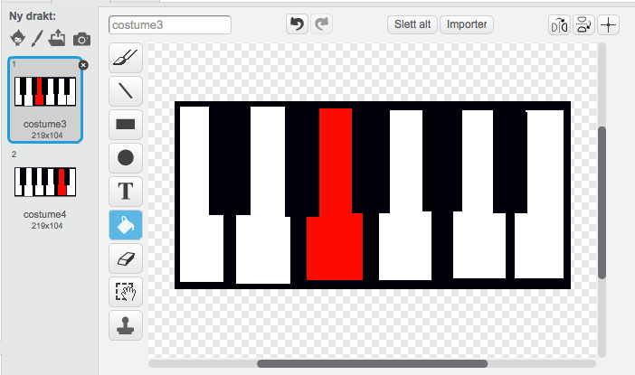

Sjekkliste
Tegn et piano ved å lage svarte og hvite rektangler.

Lag et skript som spiller en note når a trykkes.
```blocks når [a v] trykkes send melding [piano-1 v]
når jeg mottar [piano-1 v] spill tone (60 v) i (0.5) takter — + Lag to noter til for når man trykker “s” eller “d” på tastaturet.
```blocks når [a v] trykkes send melding [piano-1 v]
når [s v] trykkes send melding [piano-2 v]
når [d v] trykkes send melding [piano-3 v]
når jeg mottar [piano-1 v] spill tone (60 v) i (0.5) takter
når jeg mottar [piano-2 v] spill tone (64 v) i (0.5) takter
når jeg mottar [piano-3 v] spill tone (67 v) i (0.5) takter
- Kopier drakten 3 ganger og fyll ulike tangenter.
 
- Sørg for at hver note bytter til en annen drakt og tilbake til
drakt1slik at det ser ut som tangenten blir trykket på.
```blocks når jeg mottar [piano-1 v] bytt drakt til [costume2 v] spill tone (60 v) i (0.5) takter bytt drakt til [costume1 v]
når jeg mottar [piano-2 v] bytt drakt til [costume3 v] spill tone (60 v) i (0.5) takter bytt drakt til [costume1 v]
når jeg mottar [piano-3 v] bytt drakt til [costume4 v] spill tone (60 v) i (0.5) takter bytt drakt til [costume1 v] —
Utfordring
En måte å endre hvilket instrument som spilles.
```blocks når [pil opp v] trykkes velg instrument (tilfeldig tall fra (1) til (99)) —